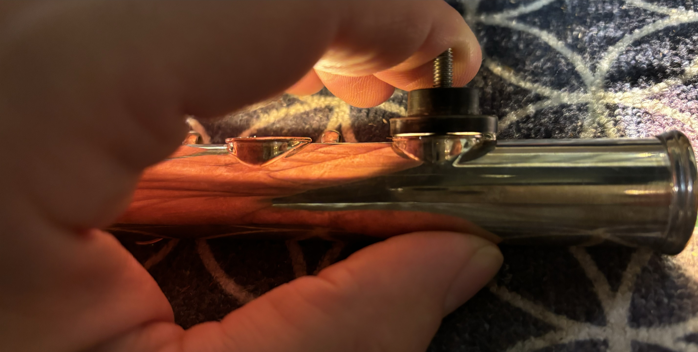
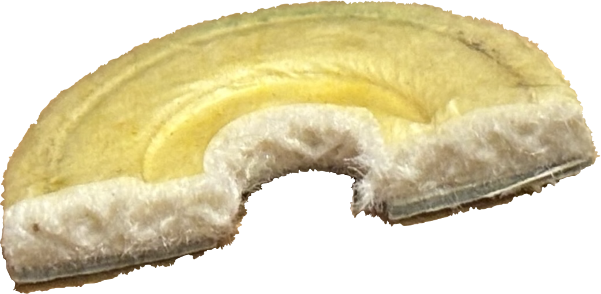
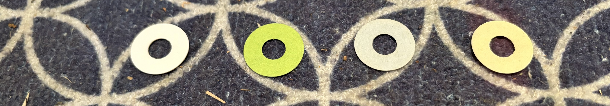
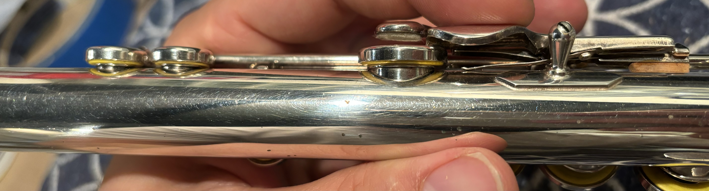

Background:
One of my passions and previous careers was band instrument repair. I ultimately changed career paths for financial reasons but still enjoy working on side projects in my basement from time to time when I'm not busy with life and class. I was particularly interested in working on flutes. A flute is basically a tube with holes and in order to work properly, those holes must be able to open and re-seal reliably using pads that act as gaskets. This article will give a brief overview of the process for adjusting a single flute pad through a process called shimming.
What Is Shimming Flute Pads and Why Is It Even Necessary?
In order for a pad to seal against a tone hole, the two surfaces must match as closely as possible. Any discrepancy creates a gap where air can leak out. To make this easier, traditional flute pads are made of felt, with a cardboard backing. Both of these materials have some give which helps take up some of the slack, but not much. In a perfect world, both the pad and tone hole will be perfectly flat and leveling the pads would just be a matter of aligning the two. This is more or less how it works on clarinets, but due to the size of flute tone holes being so large in relation to the bore, even small leaks will drastically impact the performance. This is further complicated by the fact that neither the pad, nor the tone hole is ever actually flat.
.png)
|
 |
| Diagram showing the difference between a drawn and soldered tone hole courtesy of Pearl Flutes | This tonehole looks flat to the naked eye but placing a light inside and checking the tone hole against a disc that has been machined to be perfectly flat, it becomes apparent that it's only contacting in the front and back and dips on the sides, indicated by the escaping light |
Flute tone holes are either soldered on or drawn up from the body tube. Most student flute tone holes are drawn which involves drilling a small oval hole and drawing a polished drawing ball up through the tone hole from inside the flute body. Here is a video showing this process. This stretches it to its target diameter before rolling over the edges. This process isn't perfect and it often creates a tone hole surface that is slightly wavy with high and low spots like a potato chip but less extreme. On a student-level flute, this works well-enough for what the flute will be used for, but it does leave some work on the part of the repair technician to bridge the gap between the pad and the tone hole. Soldering tone holes is more labor-intensive than drawing so it is reverved for higher-end flutes but the shimming process is more or less the same. Soldered tone holes have the advantage of being levelled which greatly reduces the amount of shimming necessary.
|  | ◂ Cross-section of an old pad, showing felt sandwhiched between a cardboard backing and goldbeater's skin |
Traditionally, flute pads are made of felt with a cardboard backing for support and wrapped in goldbeater's skin to form an air-tight membrane. As the pads are broken in, the cardboard and felt will compress and conform to the inside of the pad cup and to some degree, the tone hole, but the majority of that process will be done through shimming. Shimming is the process of strategically placing small strips of paper of various thicknesses (in increments of thousands of an inch) and sizes to compensate for discrepancies between the pad and the tone hole. This takes a lot of trial and error because the pads and shims take time to fully settle in and sometimes leaks reappear as the pad continues to settle. In order to install shims, the keys must be taken off the flute, and the pad screw and washer must come out with the pad. Only then can the shim be placed between the back of the pad and the tone hole, reinstalled, put back on the flute, and checked for leaks. This is as tedious as it sounds, but with practice, can be done more efficiently because after a while you start to get good at guessing what shims are likely to work.
What Does the Shimming Process Look Like?
The first step in shimming is setting the pad protrusion and getting the pad as a whole roughly level to the tone hole. This does not guarantee that there won't still be leaks, but is a good place to start and sometimes you get lucky and this is all you have to do for that pad. Typically, if the pad with no shims is hitting first in the front of the tone hole, that indicates that it needs to protrude out more so that it hits in the front and back at the same time. If it hits in the back first, that indicates that it's too thick. This usually means either the pad itself is too thick for the flute or the pad cup is bent, which isn't uncommon for student flutes which spend most of their lives in the hands of children. After this process the pad should be generally level to the tone hole, making contact at least front to back and not be visibly crooked. The backs of the pads are then dampened with water, reinstalled, and clamped overnight with light pad clamps. The purpose of this is so compress the felt and seat the pads inside the pad cups to remove any voids and air gaps that might make shimming more difficult. After clamping, remove the clamps and give the pads about an hour to decompress. This will give a more accurate picture of where the leaks are because checking the pads right after removing the clamps will make it appear as though there are few if any leaks because the felt is still holding the impression of the tone holes.
Any remaining leaks have to be tackled with partial shims. The technician checks for leaks using a feeler gauge which is just a stick with a thin piece of mylar or cigarette paper which is placed between the pad and tone hole, and while gently closing the pad with very light finger pressure, the feeler gauge is dragged out to check for the degree of drag. A lighter drag in one area indicates a wider gap, and therefore a leak. No drag is a very big leak. A very light touch is necessary to find all the leaks because any pad will seal if you squeeze hard enough, but the goal is to make the flute do all the work so the player can focus on playing the flute. Consistent drag all the way around is what the end result should feel like because it means the pad is contacting the entire tone hole evenly. I prefer using 120 minute cassette tape for feeler gauge material because it's pretty cheap and thinner than 0.0005" which makes it excellent for checking leaks because the thinner the feeler gauge, the smaller the leaks that it can detect.
The smaller leaks are isolated by checking with the feeler gauge and marking the boundaries on the pad cup using a sharpie which can be cleaned off later with alcohol. The biggest leaks are tackled first and gradually the gap is closed. This sounds straight-forward enough but in practice, it can be a lot of back and forth. The pads may take several sessions of clamping before they fully settle in and they are made of organic materials that don't always behave in the most predictable ways. For the smaller leaks, partial shims are used. They work at lot like the pea in The Princess and the Pea. They are placed under the gaps to push the pad material out in that spot but they must be just the right thickness, shape, and length so they don't create any edges or humps. The shim usually has to be just shorter than the length of the leak and for thicker leaks, a pyramid of shims is preferable. At the same time, fewer shims is better than a bunch of tiny shims. Ideally, the least number of shims should be used to accomplish the task because the simpler the shimming, the more stable it will be in the long-run, which means less trips to the repair shop!
This is not unlike writing software. Sometimes you spend a lot of time shimming one pad and the end result technically works but is unnecessarily comlicated. You realize there is some redudancy and the same end result could be accomplished much more cleanly and efficiently and with less shims. The next person who works on the flute will appreciate you not leaving them a mess of shim confetti.